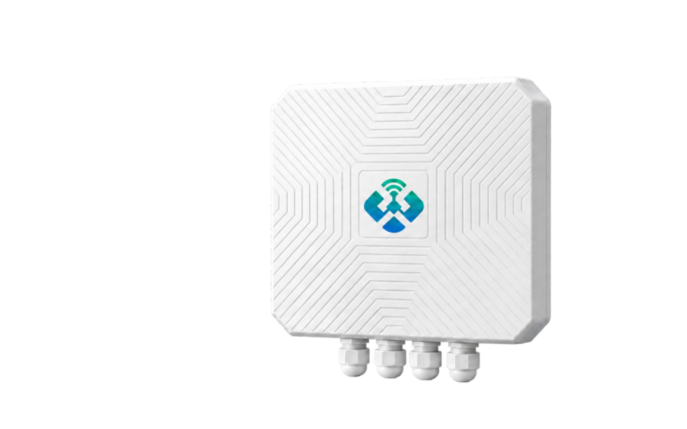

多网络接入 · 边缘协议转换 · 全球频段适配。融合 LoRa、4G、Wi-Fi 与双以太网通信。
WW-G2 是一款工业级 LoRaWAN 网关，核心采用 SX1302 LoRa 基带模组，支持面向全球不同地区的 LoRaWAN 频段配置；针对中国市场，还可支持 LoRa 私有协议。设备集成内置 NS（Network Server），可在边缘侧完成终端接入与数据汇聚，并通过 MQTT、HTTP、TCP 或 UDP 将数据转发至业务平台。
面向智慧园区、工业采集、能源与城市物联网场景，融合 LoRa、4G、Wi-Fi 与双以太网通信，提供内置网络服务器与多协议数据转发能力。
| 产品型号 | WW-G2 |
|---|---|
| 产品类型 | 工业级 LoRaWAN / LoRa 私有协议网关 |
| LoRa 核心 | SX1302 LoRa 基带模组 |
| 频段能力 | 支持全球不同地区频段配置；中国市场支持 LoRa 私有协议。具体频点、信道计划及发射参数以出厂配置和当地法规为准。 |
| 无线通信 | 4G、Wi-Fi、LoRa |
| 天线 | 4G、Wi-Fi 与 LoRa 天线均采用内置设计 |
| 有线接口 | 2 × 以太网口；1 × RS485 |
| 供电 | 9–36V DC 宽压输入 |
| 平台能力 | 内置 NS（Network Server） |
| 数据转发 | MQTT、HTTP、TCP、UDP |
| 工业协议 | 支持 Modbus 协议转发 |
| 安装形式 | 壁挂式结构（依据所示外壳） |

WW-G2 工业级 LoRaWAN 网关 · 白色方形外壳 · 正面公司 LOGO 标识 · 底部 4 个 PG 防水接头
从终端到平台的数据路径：
设备竖直壁挂安装时，四个 PG 防水接头位于机壳底部并朝下，有利于线缆自然下垂和降低雨水沿线缆进入接头的风险。正面为无螺丝的一体化盖板；维护拆装方式应以量产结构和售后指引为准。
| 现象 | 建议检查 |
|---|---|
| 设备无法上电 | 确认电压位于 9–36V DC、极性正确、端子牢固，电源容量满足整机及通信峰值需求。 |
| 终端无法入网 | 核对地区频段、信道计划、入网参数与终端密钥；检查网关周围是否存在金属遮挡或强干扰源。 |
| 平台无数据 | 检查上联网状态、目标地址与端口、鉴权、MQTT 主题或接口路径、防火墙及数据路由规则。 |
| RS485 数据异常 | 核对 A/B 线序、波特率、校验位、站号、寄存器地址、终端电阻与总线拓扑。 |
| 修订日期 | 版本 | 发布说明 |
|---|---|---|
| 2026.09 | V1.0 | 初稿发布（概念说明书） |
—— 文档结束 ——